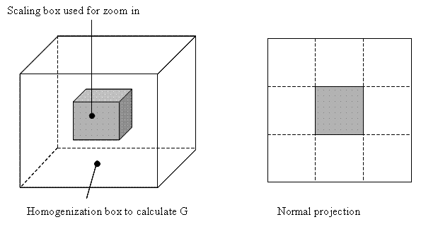

The Far Field dialog appears by right-clicking on a Scaling box name in the model tree and selecting Create Zoom-in model.
The dialog provides information about the shearmodulus of the surrounding rock required in a zoom-in analysis. This shear modulus is used to define the stiffness of the interface elements
There are two options to define the shearmodulus:
Type in the value of the shearmodulus
Use the Calculate button
This button is only available when the distance from the boundary of the large scale model to the boundary of the scalingbox is at least the edge length of the scaling box.
Pressing the Calculate button, a homogenization analysis is started with edge length 3 times the length of the scaling box. This is visualized in the figure below.

The mesh division equals 10. The Young's modulus and poisson's ration are retrieved from the large scale model.
The shearmodulus G is defined with values of the Rigidity matrix (=anisotropic material model):
G = (kxyxy + kyzyz + kzxzx) / 3